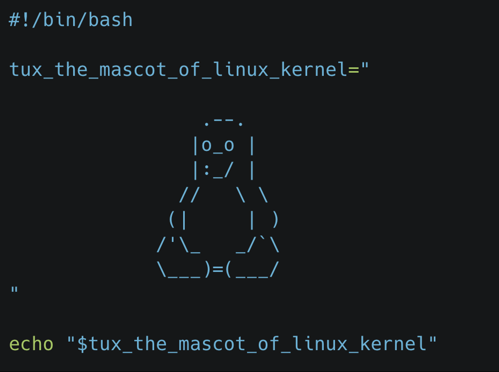
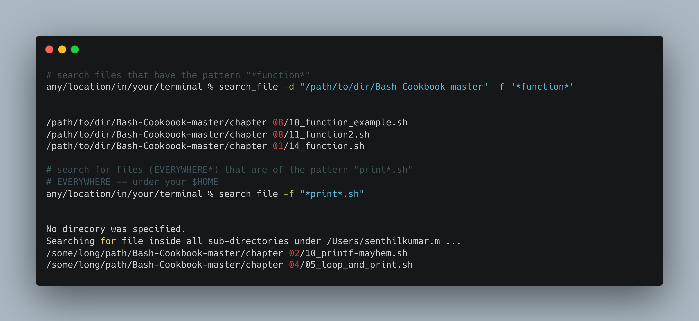
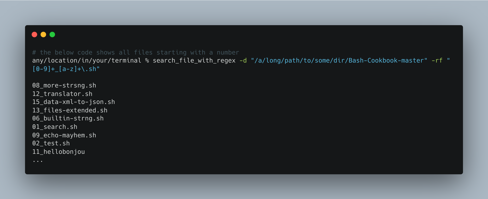
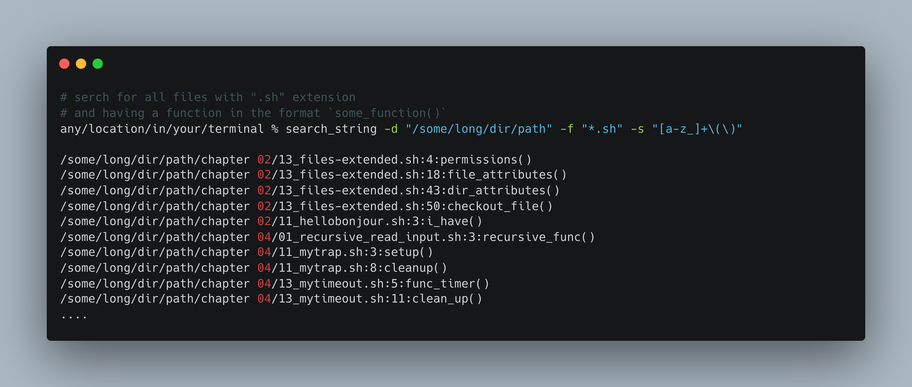
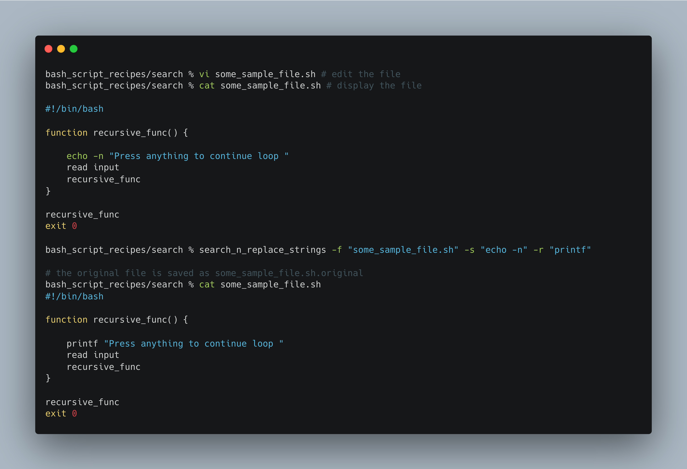
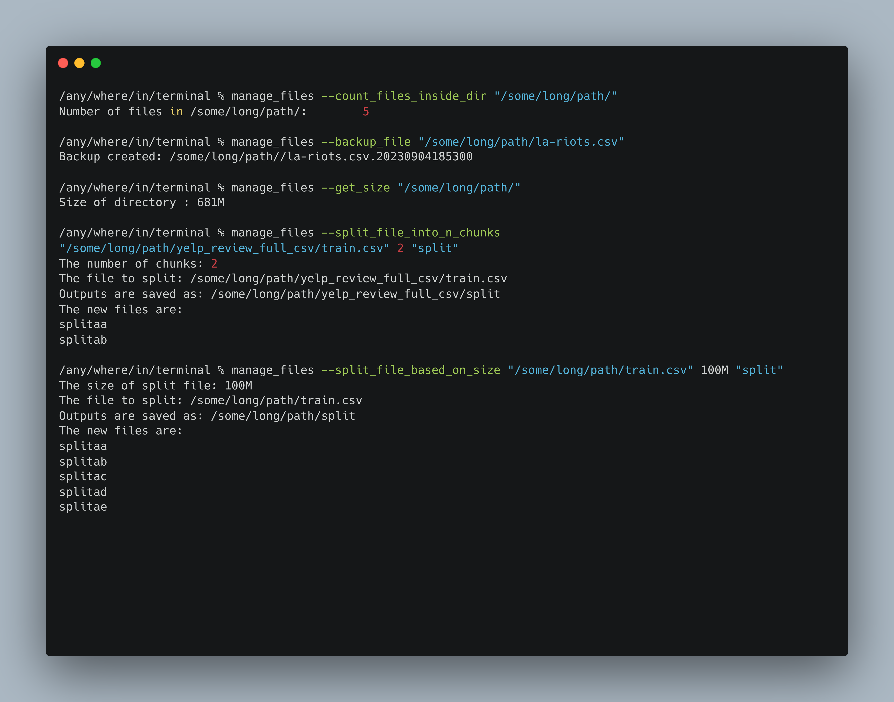
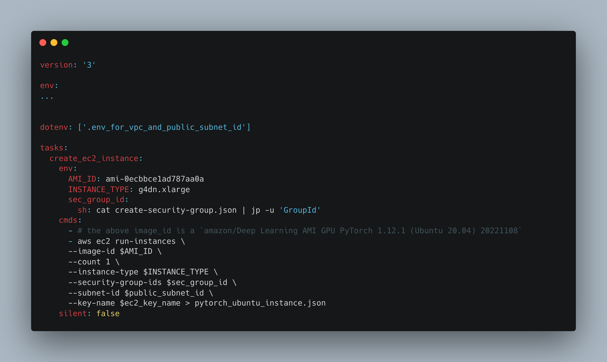

A better version of this blog piece is published in Toyota Connected India Medium Link
Bash Scripting can improve the productivity of a gamut of professionals not just DevOps, SysAdmin, Networking, ML or Cloud Engineers. It can aid product owners, scrum masters, HR professionals and even time-crunched CXOs to do their repetitive tasks faster.

Pic source: The image was created by author
Table of Contents
I. Introduction
II. Bash Script Recipes (main topic)
III. NL2Bash using LLMs
IV. Concluding Remarks
I.Introduction
I.A. Why Bash Scripting
Everyone of us deals with files and directories. We search/move/delete/copy files. We look for a particular file or directory. We may even want to search a word/phrase in the files. With Bash, we can do those tasks at scale and at great speed.
I.B. Why Bash Script Recipes
Create your own simplified bash recipes for tasks that you do repetitively. The recipes could string together several bash commands underneath, but you have abstracted them for quick use
I.C. What is in it for you
The bash script recipes discussed here are intended for 2 purposes. The reader can 1. directly use the recipes in their day-to-day work (like a mini cookbook), or 2. use the recipes to learn the fundamentals and create their own recipes
I.D. Prerequisites
- Understanding of what a Bash is, what are the different types of Bash terminals, how Bash and Linux Kernel interactions could be helpful. This important theory is out of the purview of this blog.

Pic Source: Intro to Unix (uc.edu course) | Refer here if interested
- Not mandatory, but other helpful pre-reading material:
- Google’s Shell Scripting Style guide: When to use a Shell Script | how to write function and comments
- Which Shell to use
II. The Bash CLI Recipes
Generic Recipes for everyone
search_file&search_file_with_regexsearch_string_with_regex&search_n_replace_with_stringmanage_filesinside_csv- AWS Recipes
Each of the recipes has the following details:
- Core Function
- Learnings
- How to run it as a bash command
You can always use your own data to run the recipes. If you would like to replicate what I have, follow below instructions. For sections II.1 and II.2, we are using using this github repo as dataset to play with - Download the data as follows
# in any new directory of yours
mkdir -p dir_to_run_bash_scripts && cd dir_to_run_bash_scripts
curl -L https://github.com/PacktPublishing/Bash-Cookbook/archive/refs/heads/master.zip -O && mv master.zip Bash-Coolbook.zip
unzip Bash-Coolbook.zipFor section II.4, use this csv file:
curl https://github.com/altair-viz/vega_datasets/blob/master/vega_datasets/_data/la-riots.csv >> la-riots.csvII. 1. Searching Files
Recipe Title: search_file

Core Function in the bash script search_file.bash
function search_file_in_a_dir()
{
find "$1" -type f -name "$2"
}Learnings:
findallows to search for a file recursively under every dir in a specific dir- Parameters such as are passed to functions as positional arguments
How to run the bash script as a command:
% search_file -d ./dir_to_search -f "*partial_file_to_search*"
% search_file -f "some_partial_file_name*" # OR search_file -f "full_file_name"For full recipe details and bash outputs, refer here
Recipe Title: search_file_with_regex

Core Functions in the bash script search_file_with_regex.bash
function 1_search_file_in_a_dir()
{
find "$1" -type f
}
function 2_to_treat_space_in_file_path()
{
sed "s| |?|g"
}
function 3_isolate_file_name()
{
rev | cut -d'/' -f1 | rev
}
function 4_run_regex_file_search()
{
grep -E "$2"
}
function main_function()
{
1_search_file_in_a_dir $1 | \
2_to_treat_space_in_file_path | \
3_isolate_the_file_name | \
4_run_regex_file_search $2
}
# in one line, the above command is
# find "$1" -type f | sed "s| |?|g" | rev | cut -d'/' -f1 | rev | grep -E "$2"Learnings:
- Note the piping ( | ) in the main function
search_regex_file_in_a_dir - There may be space in a file path. E.g.: “/path/to/an amazing dir/a file name.csv”
sed(streaming editor) is introduced here tofind_and_replacea spaceas we are parsing the output offindwhich could have space3_isolate_file_namefunction isolates the filename in the end by the dir separator “/”grep -Eallows for execution of regex filtering on the previous output we have piped- In a regex search, [ . * ( ) ] + are metacharacters. If you need to match them as is, escape with a backslash. E.g.: “[0-9]+_[a-z]+.sh” will match a file_name like “02_some_file_name.sh”
- While you can use “*” in
search_filebut not heresearch_file_with_regex
How to run the bash script as a command:
# if you know the source directory where to search
% search_file_with_regex -d ./dir_to_search -rf "[0-9]+_[a-z]+\.sh"
# if you do not know the directory where to search, we will search from $HOME
% search_file_with_regex -rf "some_regex_pattern" For full recipe details and bash outputs, refer here
II. 2. Searching Strings
Recipe Title: search_string

Core Function
function search_a_string()
{
find "$1" -type f -name "$2" -exec grep -H -n -E "$3" -o {} \;
}Learnings:
-execwhich will direct grep to search inside every matching file fromfindgrep -ngives out number of line that matchesgrep -ooutputs the matched stringgrep -Eallows “Extended” Regex patterns as input
How to run the bash script as a command:
# do note, it need not be just regex_pattern search,
# even a normal word as is will also be fetched
% search_string -d dir_name -f file_name -s regex_search_string
# if you do not know directory or type of file,
# you can simply do the below search string itself
% search_string -s regex_search_string
# example
# search_string -d "/some/dir" -f "*.sh" -s "[a-z_]+\(\)"For full recipe details and bash outputs, refer here
Recipe Title:search_n_replace_strings

Core Function:
function search_n_replace_the_string()
{
search_string="$1"
replacement_string="$2"
full_file_path="$3"
echo "$search_string"
echo "$replacement_string"
sed -i'.original' -e "s|$search_string|$replacement_string|g" $full_file_path
}Learnings:
- `sed -i ''`` command replaces the file in-place and leaves no backup. If you want a backup, you could give something like this `sed -i '.backup' to retrieve the original file later`How to run the bash script as a command: (refer here)
# if you do not know directory, you can specify the other 3 parameters
% search_n_replace_strings -f filename -s search_string -r replacement_stringFor full recipe details and bash outputs, refer here
II.3. Manage files
Recipe Title: manage_files:

Core Functions
# functions below are run as
# func_name arg1 arg2 ...
function count_files_inside_dir()
{
directory="$1"
num_files=$(ls -l "$directory" | grep -v "^d" | wc -l)
echo "Number of files in $directory: $num_files"
}
function backup_file()
{
file_full_path="$1"
timestamp=$(date +"%Y%m%d%H%M%S")
cp "$file_full_path" "$file_full_path.$timestamp"
echo "Backup created: $file_full_path.$timestamp"
}
function get_size()
{
file_or_dir="$1"
if [ -f "$file_or_dir" ]; then
size=$(du -sh "$file_or_dir" | awk '{print $1}')
echo "Size of $file: $size"
elif [ -d "$file_or_dir" ]; then
size=$(du -sh "$file_or_dir" | awk '{print $1}')
echo "Size of directory $file: $size"
else
echo "$file not found or is not a regular file or directory."
fi
}
function split_file_into_n_chunks()
{
num_of_chunks=$2
file_to_split=$1
file_path=$(echo $file_to_split | rev | cut -d'/' -f2- | rev)
output_prefix=$3
echo "The number of chunks: $num_of_chunks"
echo "The file to split: $file_to_split"
echo "Outputs are saved as: $file_path/${output_prefix}"
split -n $num_of_chunks $file_to_split "$file_path/${output_prefix}"
echo "The new files are:"
ls $file_path | grep "$output_prefix"
}
# the below functions are hardcoded for better understandability
function split_file_based_on_size()
{
any_file=$1
max_split_file_size=$2 #100K 50M 2G refer to KB, MB and GB
file_path=$(echo $any_file | rev | cut -d'/' -f2- | rev)
output_prefix=$3
echo "The size of split file: $max_split_file_size"
echo "The file to split: $any_file"
echo "Outputs are saved as: "$file_path/${output_prefix}""
split -b $max_split_file_size $any_file "$file_path/${output_prefix}"
echo "The new files are:"
ls $file_path | grep "$output_prefix"
}
function join_files()
{
files_prefix=$1
complete_file_name=$2
cat $files_prefix > $complete_file_name
}Learnings:
- The commands we have covered here include
- a combination of list dir command
ls,grep "^d"(anything but a directory) and word count by linewc -l - backup based on time using
dateandcp - conditions like
[ -d $file_or_dir]to detect if the value is a directory splitandcat
- a combination of list dir command
How to run the bash script as a command:
# inside the recipe, there will be a if clause to direct to the right function
# refer full recipe for details
% manage_files --function_name arg1 arg2
# You can also add any number of other file operations
# that you want to club with `manage_files`For full recipe details, refer here
II.4. Inside CSV
Recipe Title: inside_csv
# `display_column_names`, `display_n_rows_in_a_column` `basic_conditional_operations`
function display_column_names()
{
file_name=$1
head -n 1 $file_name | sed 's|,|\n|g'
}
function display_n_rows_in_a_column()
{
file_name=$1
column_name=$2
num_rows=$3
specific_column_number=$(head -n 1 $file_name | \
sed 's|,|\n|g' | \
nl | \
grep "$column_name" | \
grep -E "[0-9]+" -o)
awk -F',' \
-v column_number=$specific_column_number '{print $column_number}' \
$file_name | head -n num_rows
}
# the below functions are hard-coded for better understandability
# can you count the number of rows where gender=="Male"
function filter_a_text_column()
{
file_name="la-riots.csv"
column_name="gender"
text_to_filter="Male"
specific_column_number=$(head -n 1 $file_name | \
sed 's|,|\n|g' | \
nl | \
grep "$column_name" | \
grep -E "[0-9]+" -o)
num_of_males=$(awk -F',' \
-v column_number=$specific_column_number '$column_number=="$text_to_filter" { print }' \
$file_name | wc -l)
echo "Number of males: $num_of_males"
}
function filter_a_numeric_column()
{
file_name="la-riots.csv"
column_name="age"
numeric_column_condition=">= 18"
specific_column_number=$(head -n 1 $file_name | \
sed 's|,|\n|g' | \
nl | \
grep "$column_name" | grep -E "[0-9]+" -o)
age_gt_18=$(awk -F',' \
-v column_number=$specific_column_number \
'$column_number $numeric_column_condition { print }' \
$file_name | wc -l)
echo "Num of ppl greater than or equal to 18: $age_gt_18"
}Learnings:
- We have used primarily
awkto parse inside files awkuses column_number as input. We infer column_number from column_name usingsed,nlandgrep
How to run the bash script as a command:
# inside the recipe, there will be a if clause to direct to the right function
# refer full recipe for details
% inside_csv --function_name arg1 arg2
# You can also add any number of other file operations
# that you want to club with `manage_files`For full recipe details, refer here
II.5. AWS Recipes
Thanks for hanging on, so far. Now let us try some AWS specific recipes.
Recipe Title: Manage Multiple AWS Accounts
function recieve_and_verify_clipboard_contents
{
pbpaste > ~/.aws/credentials
verify=$(cat ~/.aws/credentials | \
head -n 2 | \
tail -n 1 | \
grep "aws_access_key_id")
if [[ -z $verify ]] ; then
echo "Your content below in Clipboard are not valid. \
Please copy the correct short term credentials"
echo $clipboard_content
fi
}
function create_aws_environment_variables()
{
export REGION=$1
# typically AWS_PROFILE is a combination like below
# <AWS_ACCOUNT_ID>_<IAM_ROLE>
export AWS_PROFILE=$(cat ~/.aws/credentials | \
head -n 1 | \
cut -c 2- | rev | cut -c 2- | rev)
echo "AWS PROFILE: $AWS_PROFILE"
export AWS_ACCOUNT_ID=$(echo $AWS_PROFILE | awk -F'_' '{print $1}')
aws configure set region $REGION --profile $AWS_PROFILE
echo -n "Logging into the AWS ACCOUNT:"
echo $AWS_ACCOUNT_ID
}- The methodology to make
manage_multiple_aws_accountswork anywhere in terminal is slightly different than the rest of the functions - This because every time a shell script is run, it makes a copy of current shell and kills that shell once the shell script is executed.
- But we want the environment variables -
$AWS_PROFILE,$REGION,$AWS_ACCOUNT_IDto persist in our current shell window
- Hence add the below bash function to
~/.zshrc.
manage_multiple_aws_accounts()
{
source /path/to/bash_script_recipes/aws_recipes/manage_multiple_aws_accounts.bash
recieve_and_verify_clipboard_contents
if [[ $# -gt 0 ]]; then
case "$1" in
--region)
region_name=$2
;;
*)
echo "Unknown option: $1"
exit 1
;;
esac
fi
create_aws_environment_variables $region_name
echo -n "You have chosen Region:"
echo $region_name
}- This function
manage_multiple_aws_accountsis sourced in every new terminal. It executes the commands increate_aws_environment_variablesin every terminal and hence persisting the environment variables likeREGION,AWS_PROFILE,AWS_ACCOUNT_IDin your current terminal - Note the
sourcecommand which sources themanage_multiple_aws_accounts.bashscript
Run the script (this is as usual)
# keep the AWS Credentials copied
# from your aws_sso_start url like https://my-sso-portal.awsapps.com/start
any/location/in/your/terminal % manage_multiple_aws_accounts --region ap-south-1
Copied Credentials successfully
AWS PROFILE: 123456789_DevOps-Engineer
Logging into the AWS ACCOUNT: 123456789
You have chosen Region: ap-south-1- If you are a DevOps personnel, you may be interested in a fully AWS CLI solution | refer link
For full recipe details, refer here
There are two sample AWS recipes created from scratch using AWS CLI and some basic bash commands. Do check it out at your leisure.
how to create and connect to an EC2 instance| link- This is a Taskfile.yml. But in essence, you are executing individual bash commands
- Taskfile is so intuitively good. Check it out here.

- From scratch, how to
create_a_vpc_with_private_subnet_and_nat.bash| link
III. Natural Language 2 Bash (NL2Bash) using LLMs …
NL2Bash can be done both via Paid and Free LLMs. 1. If you are not constrained by budget, a paid Large Language Model based option is possible for productional use. Do explore AI-Shell and Yolo , powered by ChatGPT. 2. If you want a fully local and free version, there is the repo Ollama for Mac OS, which simplifies running llama2 locally.
If there is a solid case for giving users/developers a Natural Language way of accessing the application, the NL2Bash is a really good option.
In fact, in the same API, NL2Py or NL2SQL can also be implemented to interact with your application.
NL2bash is truly exciting. However, if you won’t be running an extensively varied list of bash commands, then using an NL option is akin to using a bulldozer to mow a lawn. You’d be better off mowing the old-fashioned way with custom Bash recipes like the ones mentioned above, which leave no memory footprint and execute exceptionally swiftly.
IV. Concluding Remarks
At its core, the bash script recipes discussed here consist of just a simple transformation
function a_specific_function()
{
# some simple transformation
}Source: Refer Google’s Bash Scripting Style Guide
It is NOT a replacement for Python or Rust or even a Taskfile. Neither are the languages a replacement for Bash. But in combination with your core programming language, they are really powerful.
If I take some technical liberty, you did not execute bash scripting when you used find , grep, sed and awk, you actually leveraged really efficiently written C codes (source). Unequivocally, it is a great skill in your toolbox.
Bash scripting is foundational to Software Engineering and more pervasive than you think. If you have used git, docker, kubectl or even just mkdir & cd, you have tip-toed into bash scripting. Why not dive in?
Happy Bash Scripting !